Trener, mentor, psychotraumatolog, terapeuta psychodeliczny, autor. Czternaście lat pracy z ludzkim umysłem — terapeutycznie, technologicznie i biznesowo.
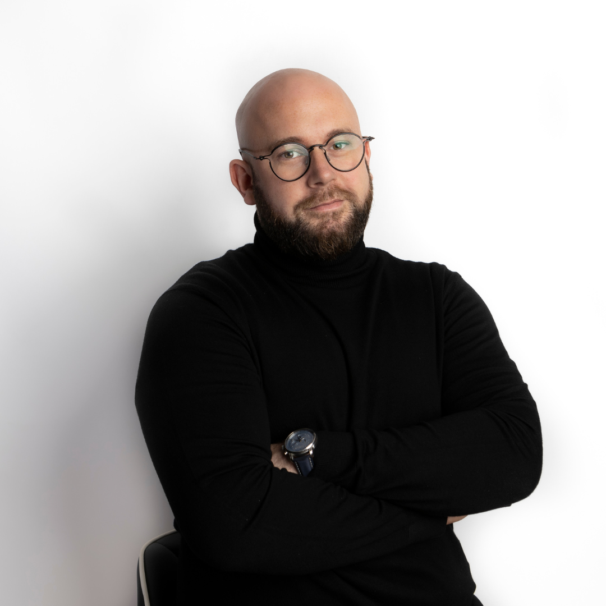
Wsparciem emocjonalnym zajmuję się od czternastu lat. Zaczynałem od pracy indywidualnej i grupowej, dziś współtworzę Profesjonalną Szkołę Hipnoterapii. Równolegle robię doktorat w Instytucie Psychologii PAN i pracuję na styku hipnoterapii i terapii wspieranej psychodelikami.
Uczyłem się tego tam, gdzie się to odbywa na szeroką skalę: Integrative Psychiatry Institute w Boulder, Colorado (Psychedelic-Assisted Therapy Provider), Psychedelic Sitters School (Credentialed Cannabis-Assisted Psychedelic Therapy Specialist), trening MAPS z terapii PTSD wspieranej MDMA. Współpracuję z Center for Medicinal Mindfulness Daniela McQueena, Fundacją Psychedelic Shine i DMTx.
Jako psychotraumatolog i interwent kryzysowy pracuję z ludźmi w momentach, w których psychika jest najbardziej odsłonięta. Napisałem „Autohipnozę: Bliskie spotkania z samym sobą”. Prowadziłem wykłady m.in. na Śląskim Uniwersytecie Medycznym, Uniwersytecie Jagiellońskim i na Konferencji Terapii i Integracji Psychodelicznej Holomind. Założyłem Centrum Terapii SACRUM.
Poza gabinetem prowadzę markę streetwear Egoisn't, wymyśliłem i prowadzę CIEŃ Festiwal, wspieram klientów w budowaniu marki osobistej w obszarze zdrowia psychicznego. Wiele projektów naraz to u mnie norma, nie wyjątek.
Każdy ma własną domenę, zespół i tempo. Poniżej to, co w nich robię.
Centrum Terapii Psychodelicznych — mój główny projekt. Terapia wspierana psychodelikami i hipnoterapia, praca indywidualna i grupowa, warsztaty i kursy dla tych, którzy chcą wejść głębiej.
sacrum.life ↗ WspółtwórcaUczymy hipnoterapii tych, którzy będą z niej żyć: szkolenia, certyfikacja, materiały kliniczne.
hipnoterapia.edu.pl ↗
Mój festiwal — kultura alternatywna spotyka psychologię i pracę ze świadomością.
cienfestiwal.com ↗ TwórcaStreetwear dla psychonautów i ludzi od psychologii, z przymrużeniem oka do własnego ego.
egoisnt.com ↗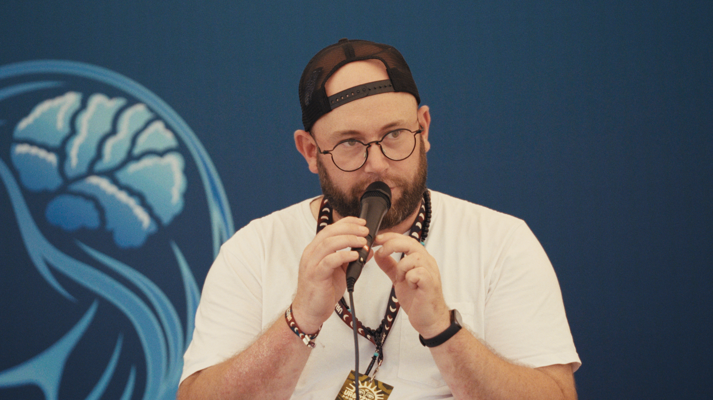
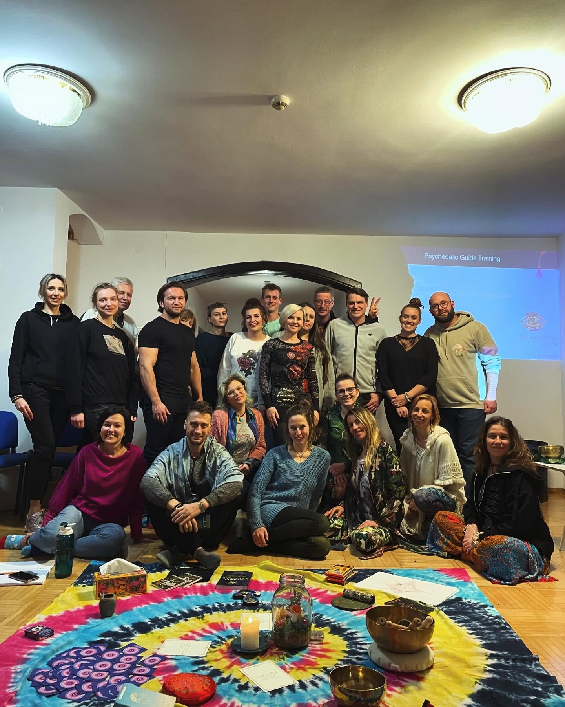
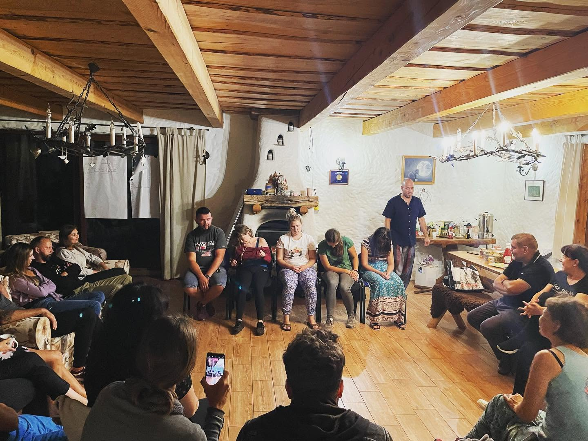
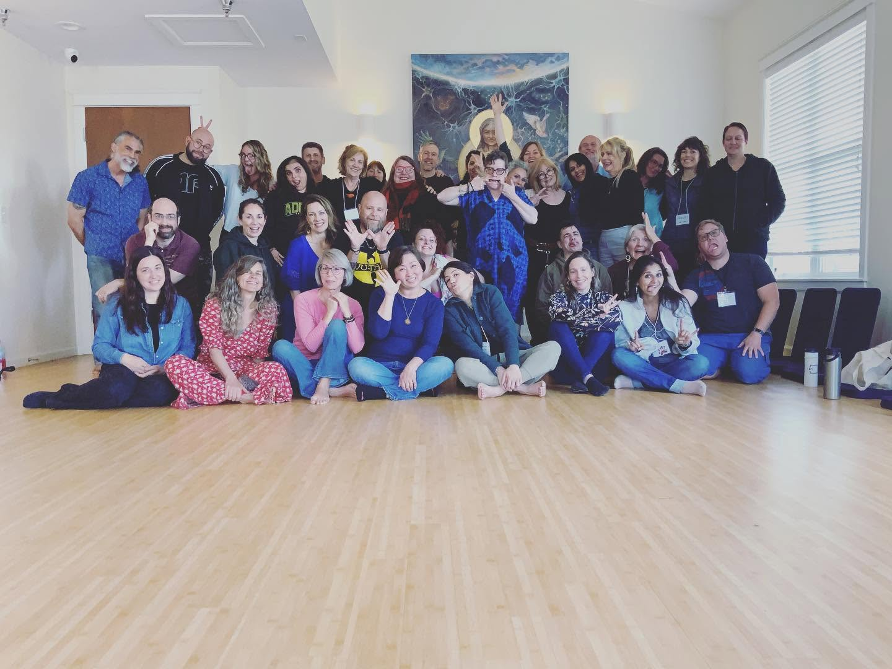
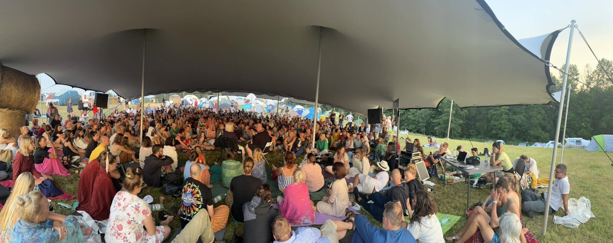
Pracuję z psychodelikami klinicznie i legalnie. To narzędzie osadzone w przygotowaniu, sesji i integracji — nie doświadczenie samo w sobie. Tym różni się moje podejście od rekreacyjno-duchowego nurtu, który narósł wokół tego tematu.
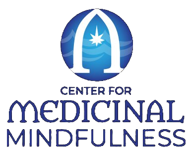
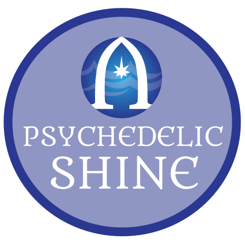
Terapię indywidualną i grupową prowadzę w SACRUM — tam są terminy i zapisy.
Wydawnictwo Sensus. W druku, jako ebook i audiobook.
[Placeholder — opis książki do wklejenia z materiałów wydawcy]
Kup na Sensus ↗Piszę drugą książkę — tym razem o hipnozie klinicznej. Więcej wkrótce.
Formularz wysyła dane do endpointu ustawionego w polu „formEndpoint” — do podłączenia z MailerLite.
Jestem trenerem hipnoterapii. Szkolę praktyków — przez Profesjonalną Szkołę Hipnoterapii — i prowadzę warsztaty dla osób spoza branży, które chcą pracować z własną świadomością.
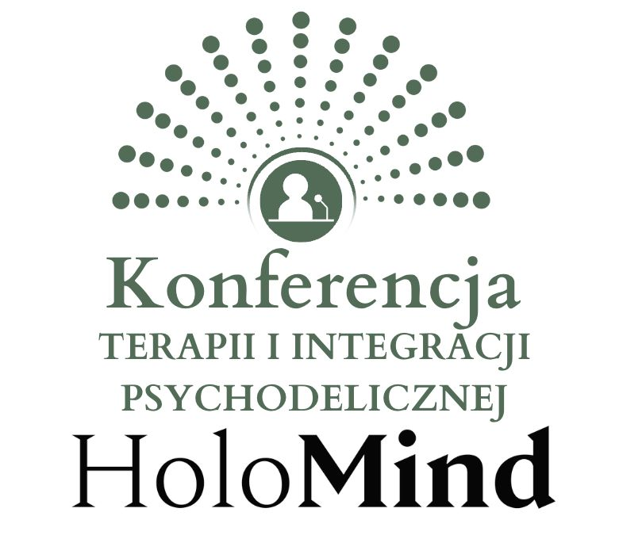
Budowanie projektów to moja druga pasja. Nie tylko gabinet — całe ekosystemy: szkoła, festiwal, marka, centrum terapii. Wszystko wokół świadomości i zmiany.
Szkolenia dla praktyków — hipnoterapia.edu.pl ↗Komentuję świat zdrowia psychicznego, odmienne stany świadomości i terapię wspieraną psychodelikami w telewizji, radiu i prasie — zawsze od strony klinicznej.
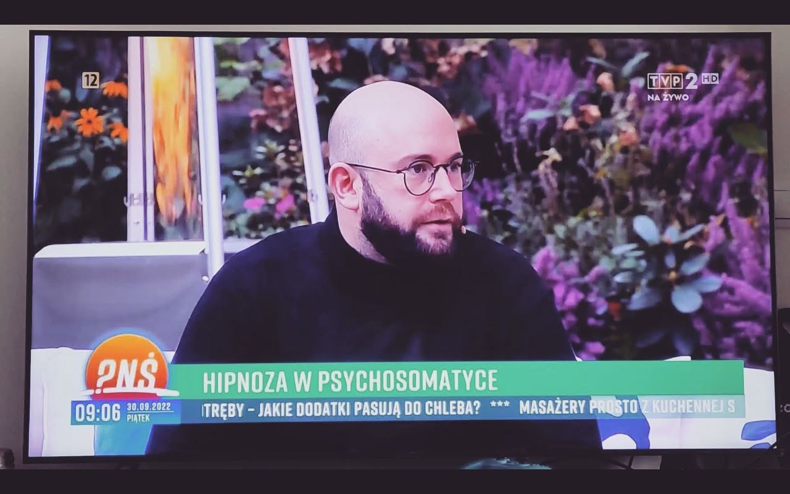
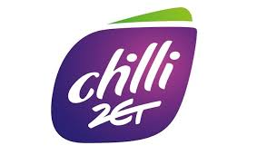
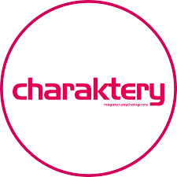
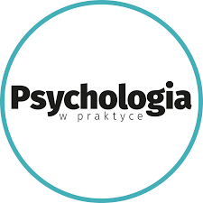
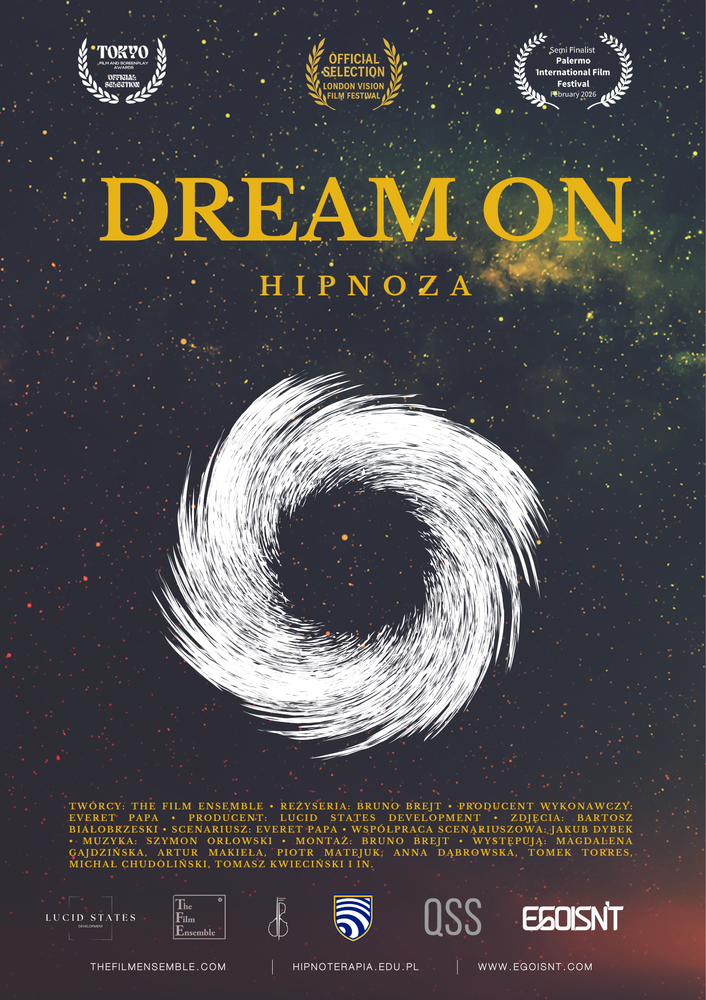
Prawdziwe historie pacjentów poddanych hipnozie i ludzi, którzy się tym zajmują. Dokument pokazuje naukowe i psychologiczne kulisy hipnoterapii — występuję w nim jako hipnoterapeuta.
Pełny film, 59 minut. Dostęp po opłaceniu — bez abonamentu.
Obejrzyj film Karta filmu na Filmwebie ↗Link płatności do podmiany (pole „filmCheckoutUrl") — bez podłączonej bramki nie udaję zakupu.
Dla osób, które mają konkretny problem, decyzję albo kierunek do przepracowania — osobisty albo zawodowy — i chcą przy tym skorzystać z moich czternastu lat pracy terapeutycznej lub biznesowej. To praca rozwojowa, nie usługa medyczna.
Napisz w sprawie współpracy, wystąpienia, szkolenia lub mentoringu. Zapisy na terapię nie idą przez ten formularz.
Terapię indywidualną i grupową prowadzę w SACRUM — tam są terminy i zapisy.
Przejdź do sacrum.life ↗